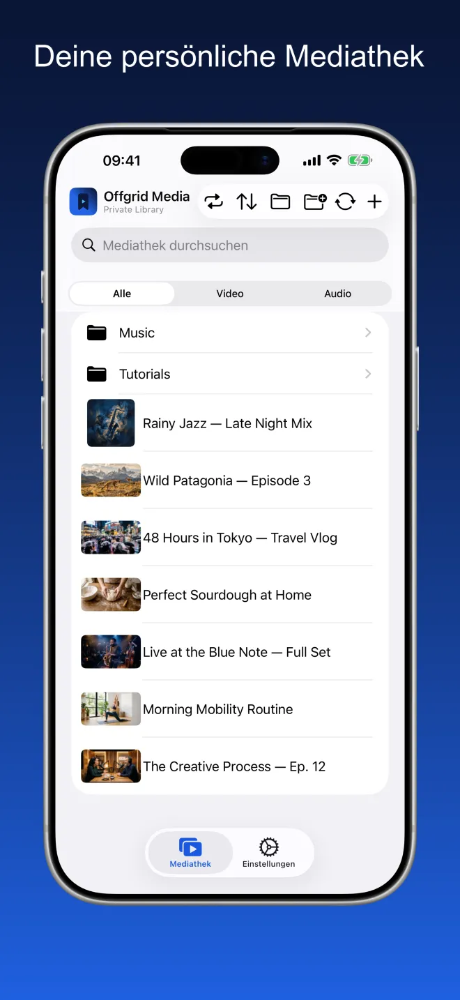
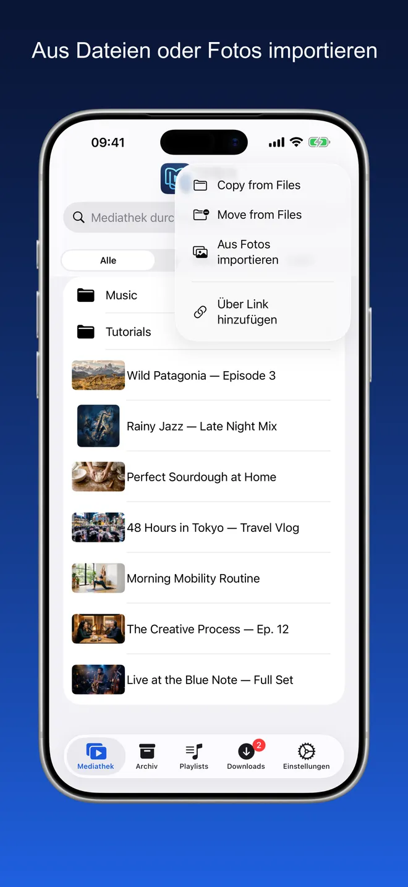
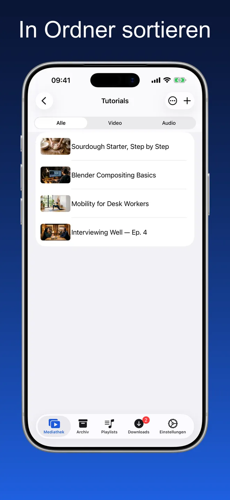
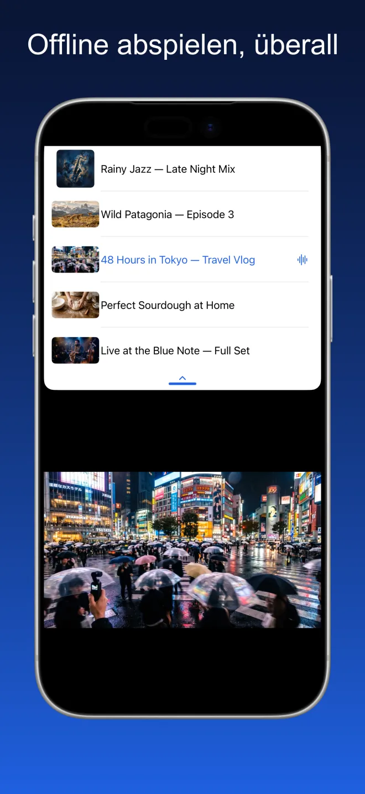
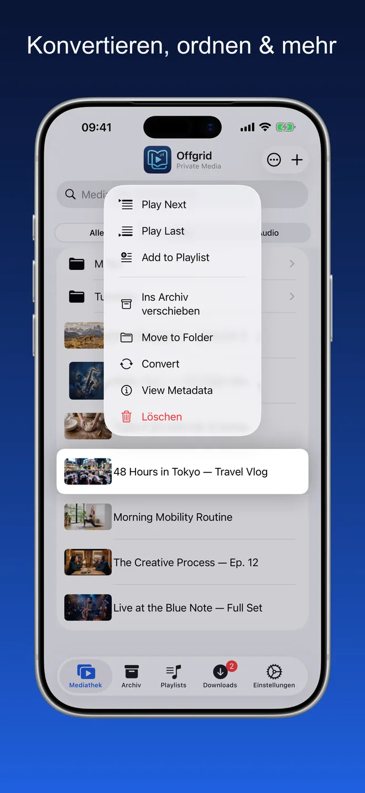
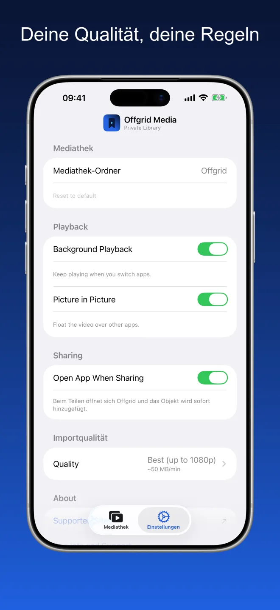

Offgrid Media · Private Mediathek
Alles, was du behältst,
offline.
Hol die Videos und Audios herein, die du bereits hast — aus Dateien, aus Fotos oder über einen Link, den du behalten darfst — und spiele alles offline an einem aufgeräumten Ort ab.
Probier es aus. Das Netz ist weg — deine Mediathek spielt trotzdem.

Ein aufgeräumter Ort für deine eigenen Medien
Ordner, Suche und ein Filter für Video oder Audio. Vorschaubilder kommen aus der Datei selbst, Cover und Metadaten bleiben erhalten.





Importieren, ordnen, abspielen
Aus Dateien oder Fotos importieren
In Ordner sortieren
Offline abspielen, überall
Ein echter Player, kein Ordner voller Dateien
Alles hier unten funktioniert ohne Netz.
Import aus Dateien und Fotos
Füge Videos und Audios aus iCloud Drive, von deinem Gerät oder aus deiner Fotomediathek hinzu. Alles landet in deiner Mediathek und ist sofort abspielbar.
Ordne es nach deinem System
Lege Ordner an, verschiebe Objekte zwischen ihnen und durchsuche alles, was du behalten hast. Filtere nach Video oder Audio, wenn du dich konzentrieren willst.
Für offline gemacht
Was einmal in deiner Mediathek ist, bleibt auf deinem Gerät. Kein Puffern, keine Verbindung nötig, nichts wird von irgendwoher gestreamt.
Ein echter Player
Der Reihe nach oder zufällig abspielen, dort weitermachen, wo du aufgehört hast, die Warteschlange füllen und Videos im Bild-in-Bild-Modus weiterschauen, während du andere Apps nutzt. Cover und Metadaten bleiben erhalten.
Hintergrundwiedergabe
Hör weiter, wenn du die App wechselst oder den Bildschirm sperrst.
Wähle deine Qualität
Stelle deine bevorzugte Qualität einmal in den Einstellungen ein — beste verfügbare, 720p, 480p, 360p oder nur Audio.
Kein Konto. Keine Werbung. Kein Tracking.
Offgrid Media speichert alles lokal auf deinem Gerät. Nichts wird hochgeladen, nichts geteilt, kein Konto erforderlich.
Nichts zu sammeln, weil es nirgendwohin geht
Offgrid Media hat kein Konto und keinen eigenen Server. Das App-Store-Datenschutzmanifest weist kein Tracking und keine erfassten Datentypen aus.
Häufige Fragen
Nein. Was einmal in deiner Mediathek ist, liegt auf deinem Gerät und spielt auch ohne Netz. Beim Abspielen wird nichts gestreamt, also gibt es kein Puffern und keine Verbindung, die abbrechen kann.
In einem Ordner auf deinem Gerät, im Speicher der App. In den Einstellungen kannst du einen anderen Mediathek-Ordner wählen, und da die App die Dateien-App unterstützt, kannst du dieselben Dateien auch dort ansehen. Nichts wird hochgeladen, es gibt keine Cloud-Synchronisierung.
Import aus Dateien (iCloud Drive oder lokal), Import aus der Fotomediathek oder über einen Link, den du behalten darfst. Der Import ist der Hauptweg; der Link ist eine zusätzliche Bequemlichkeit.
Ja. Aktiviere Hintergrundwiedergabe in den Einstellungen, dann läuft die Wiedergabe weiter, wenn du die App wechselst oder den Bildschirm sperrst — mit Titel, Cover und Steuerung auf dem Sperrbildschirm und im Kontrollzentrum. Videos laufen im Bild-in-Bild-Modus über anderen Apps weiter.
Nein. Offgrid Media hat kein Konto, kein Backend, keine Analyse und keine Drittanbieter-SDKs. Das App-Store-Datenschutzmanifest weist kein Tracking und keine erfassten Datentypen aus. Die einzige Berechtigung, die sie anfragt, sind Mitteilungen.
Nichts. Kein Abo, keine In-App-Käufe, keine Werbung.
Bitte füge nur Inhalte hinzu, die du behalten darfst. Die Einhaltung der Nutzungsbedingungen jeder Plattform und der geltenden Gesetze liegt allein in deiner Verantwortung.
Deine Mediathek. Dein Gerät. Kein Empfang nötig.
Offgrid Media ist kostenlos, für iPhone und iPad, in 11 Sprachen.